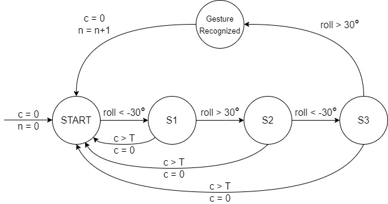

Gesture Controlled Swarm
Gesture Controlled Swarm is an individual project for the course CSCI 599 – Holodecks at USC.
TL;DR
Gesture Controlled Swarm uses drones to render a simple 3D point cloud which can be controlled and manipulated by a user's hand gestures.
A control object attached to the user's body is used to control the drones. The rendering is programmed to be positioned and oriented relative to the control object, which also recognizes user gestures assignable to various tasks such as activating and deactivating the rendering.
The project is built upon USC ACT lab's Crazyswarm, which defines a Python API to track and control a swarm of Crazyflie 2.0 miniature quadcopters.
Design and Implementation
Control Object
The control object is the body of a Crazyflie 2.0 without motors or propellers. It has the same marker arrangement as the other drones and an onboard IMU and microcontroller to provide position and orientation information. It is designed to be attached to the user's wrist using double-sided tape.

Object Rendering and Positioning
The 3D point cloud is defined as a list of coordinates in the control object's coordinate system. Each drone represents one point. Using the position and orientation of the control object, the target coordinates for each drone in the world coordinate system are calculated.
Max velocities in horizontal and vertical directions and a control loop frequency are set. From these, the maximum allowed movement per drone per iteration is derived, constraining drone setpoints to remain within physical flight limits.
Gesture Recognition
A "Hand wave" gesture toggles the rendering on and off. The gesture is defined as a sequence of roll angles of the control object satisfying the following series of conditions C within a specified number of seconds:
C: roll < −30° → roll > 30° → roll < −30° → roll > 30°
The recognition is implemented as a timed automaton, illustrated below.

Results
We rendered a simple 3D point cloud of 3 points in a triangle shape. On executing the "Hand wave" gesture, 3 drones take off to render the cloud at specific distances relative to the control object on the user's wrist. They follow arm movements to stay at a fixed location relative to the control object. Twisting the arm rotates the rendered cloud. Executing the gesture again lands the drones at their current positions.
Resources
Recorded demonstrations are available at this YouTube Playlist. The code is at my GitHub repo.